Año 2015
Préstamos por estación – 2015 (Salidas y Llegadas, ranking) | bloque 1/1
Año 2016
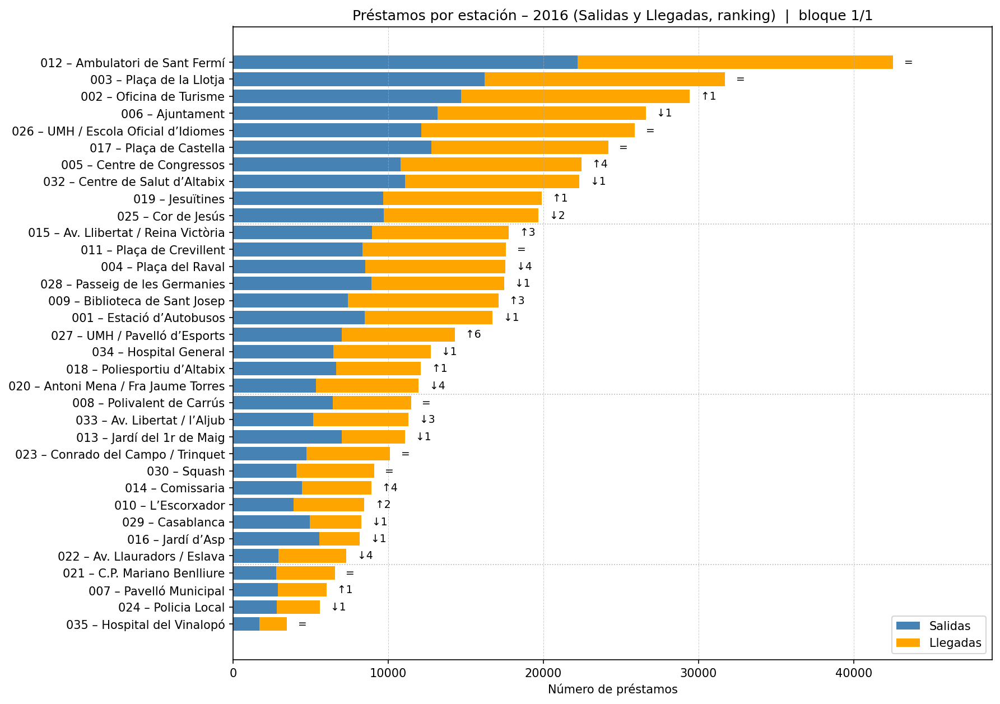
Préstamos por estación – 2016 (Salidas y Llegadas, ranking) | bloque 1/1
Año 2017
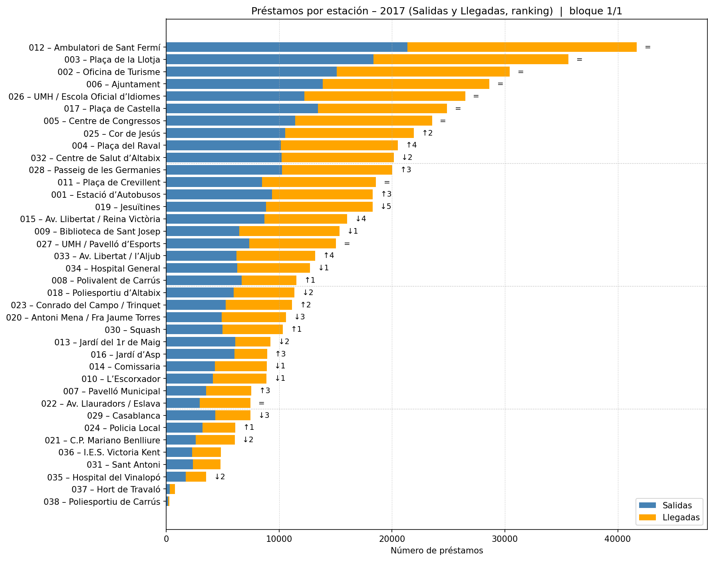
Préstamos por estación – 2017 (Salidas y Llegadas, ranking) | bloque 1/1
Año 2018
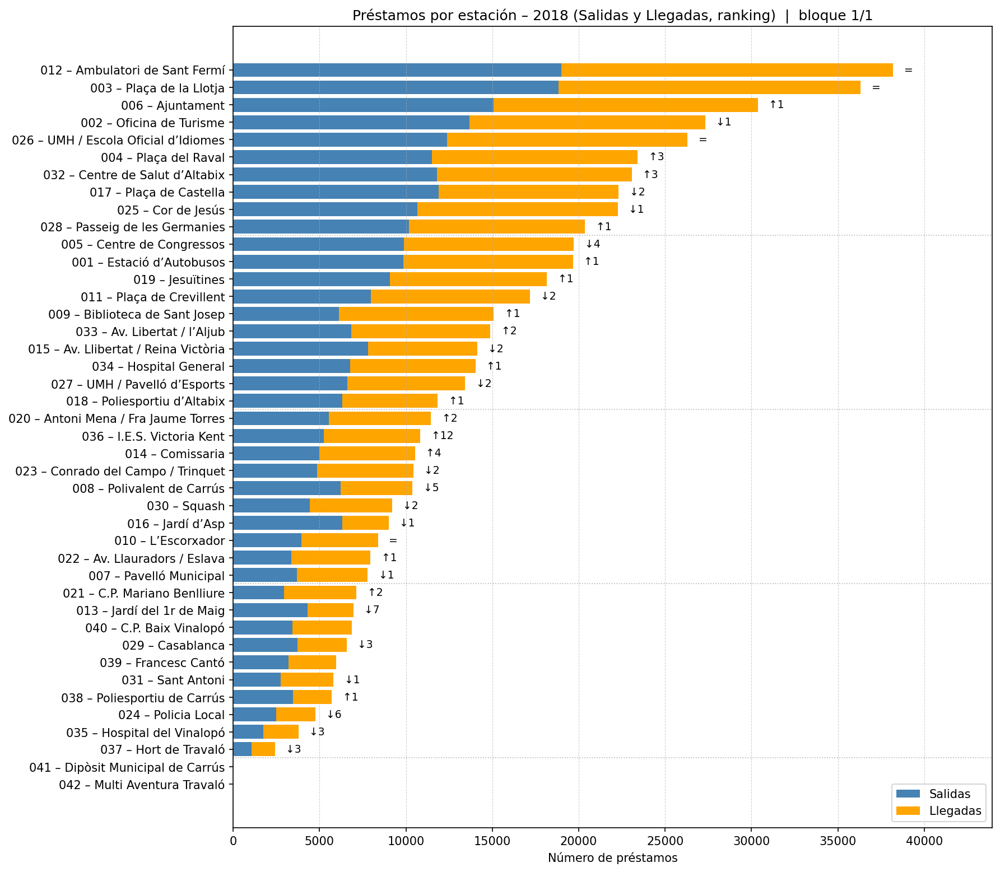
Préstamos por estación – 2018 (Salidas y Llegadas, ranking) | bloque 1/1
Año 2019
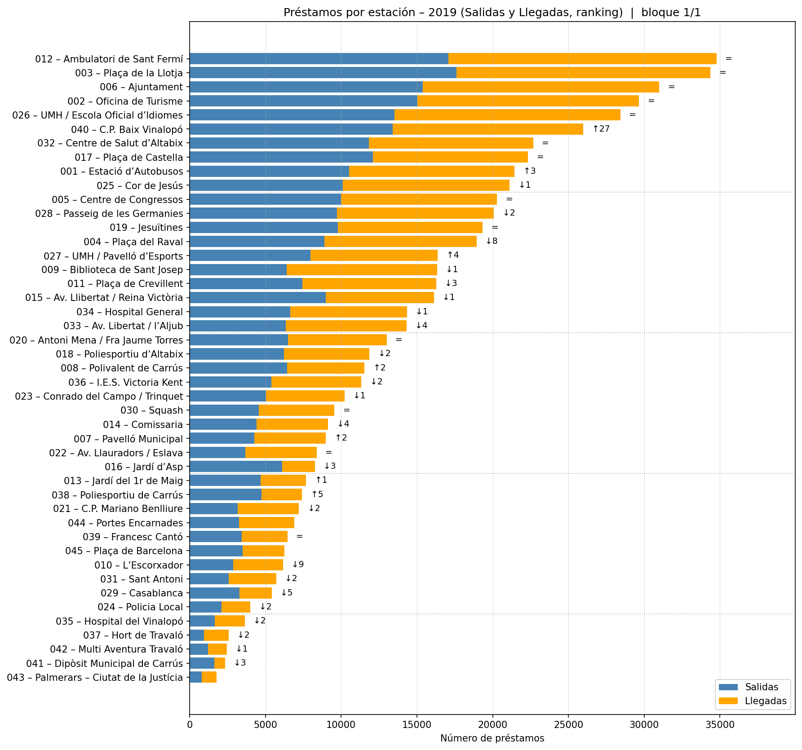
Préstamos por estación – 2019 (Salidas y Llegadas, ranking) | bloque 1/1
Año 2020
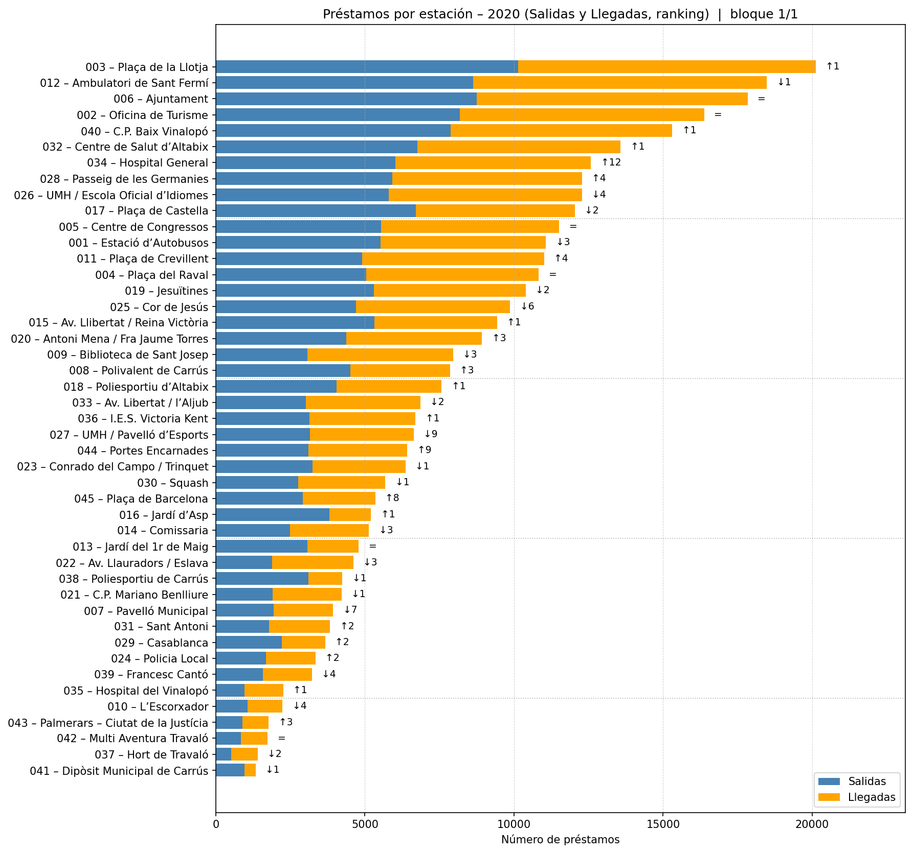
Préstamos por estación – 2020 (Salidas y Llegadas, ranking) | bloque 1/1
Año 2021
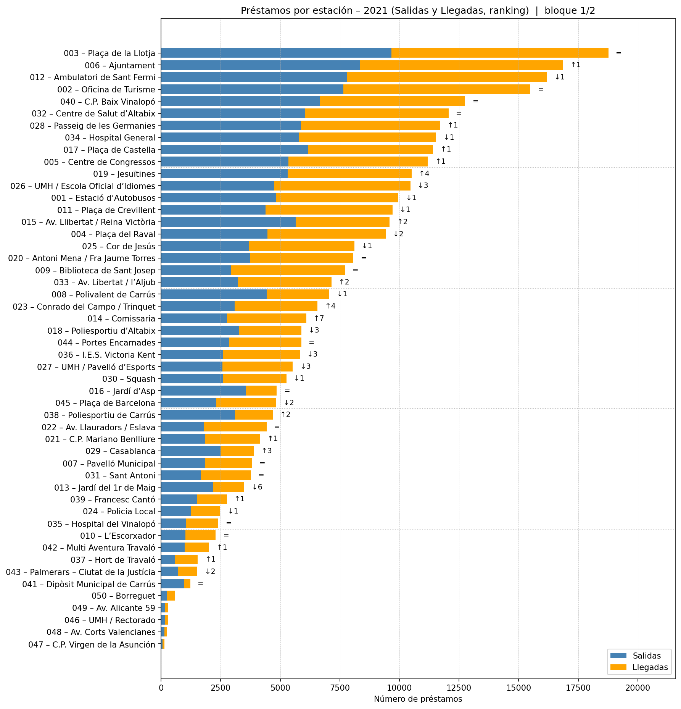
Préstamos por estación – 2021 (Salidas y Llegadas, ranking) | bloque 1/2
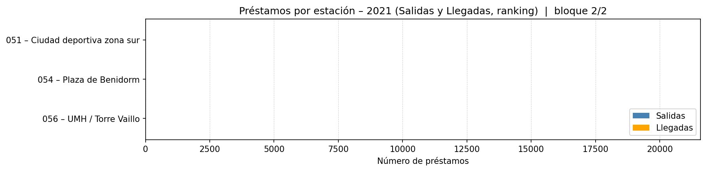
Préstamos por estación – 2021 (Salidas y Llegadas, ranking) | bloque 2/2
Año 2022
 Préstamos por estación – 2022 (Salidas y Llegadas, ranking) | bloque 1/2
Préstamos por estación – 2022 (Salidas y Llegadas, ranking) | bloque 1/2
 Préstamos por estación – 2022 (Salidas y Llegadas, ranking) | bloque 2/2
Préstamos por estación – 2022 (Salidas y Llegadas, ranking) | bloque 2/2
Año 2023
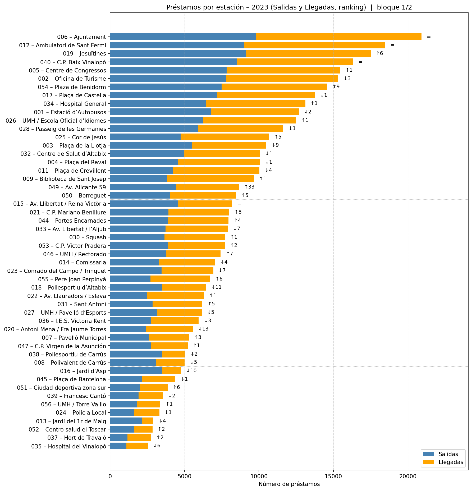
Préstamos por estación – 2023 (Salidas y Llegadas, ranking) | bloque 1/2
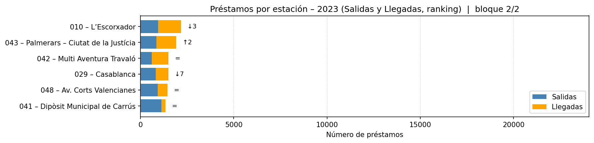
Préstamos por estación – 2023 (Salidas y Llegadas, ranking) | bloque 2/2
Año 2024
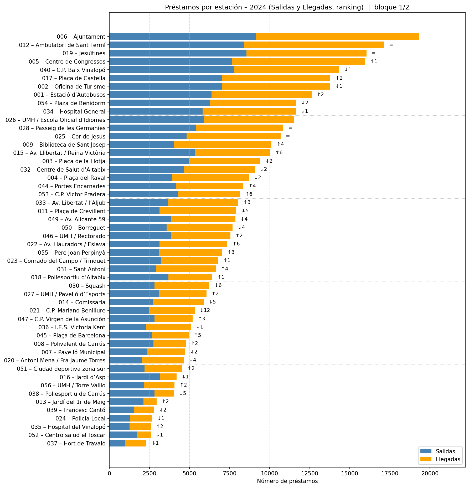
Préstamos por estación – 2024 (Salidas y Llegadas, ranking) | bloque 1/2
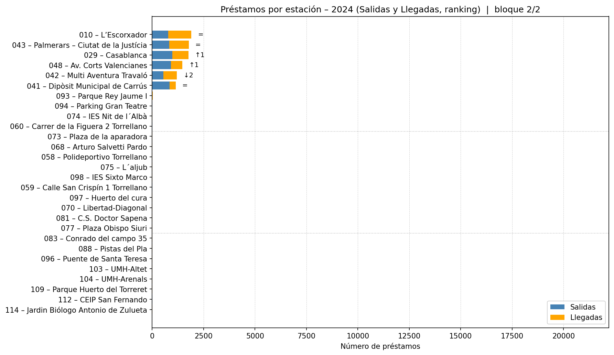
Préstamos por estación – 2024 (Salidas y Llegadas, ranking) | bloque 2/2
Año 2025
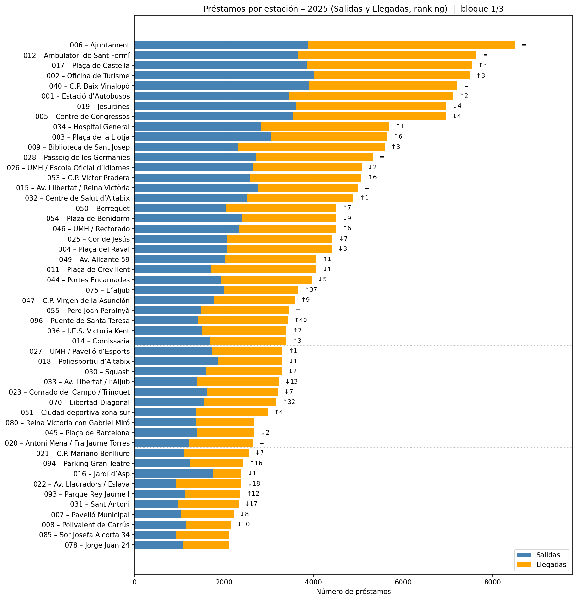
Préstamos por estación – 2025 (Salidas y Llegadas, ranking) | bloque 1/3
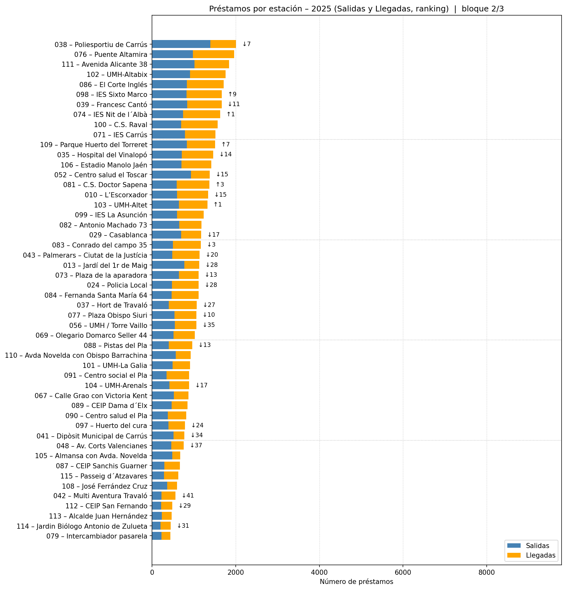
Préstamos por estación – 2025 (Salidas y Llegadas, ranking) | bloque 2/3
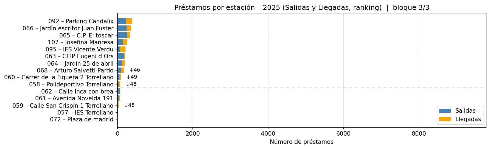
Préstamos por estación – 2025 (Salidas y Llegadas, ranking) | bloque 3/3
×